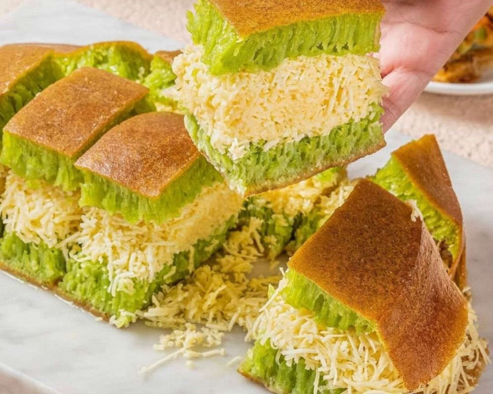

Usaha Martabak Jakarta 1994 adalah sebuah bisnis yang berfokus pada pembuatan dan penjualan martabak yang berada di Kota Madiun, Jawa Timur telah didirikan sejak tahun 1994. Bisnis ini dikenal karena menyajikan martabak dengan berbagai varian rasa dan isian yang lezat.
Rasa yang Lezat
Berbagai macam jenis martabak dan terang bulan yang menggiurkan, juga menawarkan pengalaman rasa yang memuaskan.

Berbagai Varian Rasa
Ada berbagai pilihan isian untuk martabak dan terang bulan, mulai dari cokelat, keju, kacang, hingga daging.
Kemudahan dalam Konsumsi
Makanan yang dapat dinikmati sebagai camilan atau makanan penutup, sehingga cocok untuk berbagai kesempatan dan suasana.